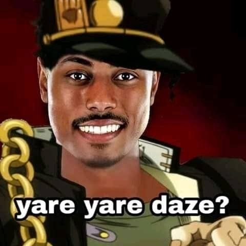

Jojos Bizzarre adventure parte 3
 La tercera parte de JoJo's Bizarre Adventure, titulada "Stardust Crusaders", marca un cambio significativo en la serie al introducir el concepto de los Stands, manifestaciones de poder únicas que acompañan a los personajes principales en su viaje. Aquí seguimos a Jotaro Kujo, nieto de Joseph Joestar, junto con un ecléctico grupo de aliados, en un viaje épico a través de varios países para derrotar a Dio Brando, quien ha resurgido una vez más y amenaza con sumir al mundo en la oscuridad eterna.
"Stardust Crusaders" se caracteriza por su estructura de viaje, donde cada episodio presenta a los protagonistas enfrentando un Stand de usuario diferente en su camino hacia Egipto, donde se encuentra Dio. Esta parte destaca por sus emocionantes batallas llenas de estrategia y creatividad, así como por el desarrollo de personajes que exploran temas de amistad, sacrificio y la lucha contra el destino. Con su narrativa épica y la introducción de los Stands, "Stardust Crusaders" se convierte en un hito en la serie JoJo, dejando una marca indeleble en la historia del manga y el anime.